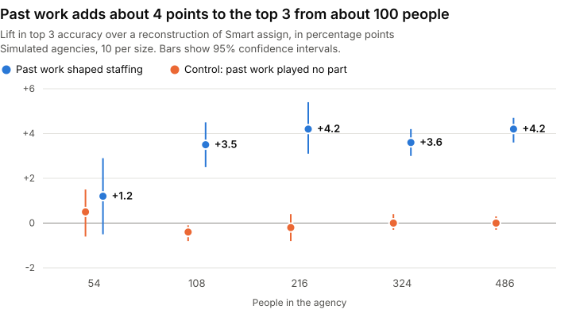

Smart assign suggests who should fill an open role by matching job titles and checking who is free. Per Float's help article, it doesn't look at what people have worked on. I built a version that also uses past work (same client, similar projects, matching skills) and tested both.
The result: from about 100 people, past work adds about 4 points to top 3 accuracy and 2 to 5 points to first pick. At 54 people it adds nothing measurable. The staffing history is invented, so this shows a direction, not what Float customers would see. The code is in the repo.
There is no public staffing data, so I made some. I invented a 54-person agency with 18 months of projects: 391 past staffing decisions and 68 open roles. I loaded it into a Float trial through the public API, so Smart assign could run on it, and recorded its top 3 for 20 open roles from the app, because Smart assign isn't in the API.
To replay history I needed Smart assign's logic in code, so I rebuilt it from the help docs: title match first, then availability. It is a reconstruction, not Float's code. It matched the real first pick on 15 of the 20 roles.
The test takes each past decision, hides who got the job, and asks both rankers to suggest people using only what was known before that project started. I trained on the earlier 186 decisions and scored the later 205. The chart uses the same test on bigger simulated agencies, 10 per size, run outside Float.

In a small agency, a free person with the right title is nearly the answer already. In a big one, many free people share that title, and knowing who has done this kind of work starts to separate them. The title and availability ranker has a tie at the top on 12% of decisions at 54 people and 66% at 486.
The effect steps up once, then stays flat. It does not keep growing with size.
Why there is a control. Past work matters here because I made it matter when I invented the history. So I also built agencies where it played no part. On those, the model gives client history almost no weight (about 0.0, against about 0.2 in the main run) and its lift falls to about zero. The control shows the model doesn't invent an effect. It can't show that real managers behave this way.
| People | Title and availability, top 3 | With past work, top 3 | Lift | Control lift | From past work (95% CI) |
|---|---|---|---|---|---|
| 54 | 68.9% | 70.1% | +1.2 | +0.5 | +0.7 (-0.8 to 2.3) |
| 108 | 55.5% | 59.0% | +3.5 | -0.4 | +3.9 (2.9 to 5.0) |
| 216 | 42.4% | 46.6% | +4.2 | -0.2 | +4.4 (3.6 to 5.3) |
| 324 | 35.9% | 39.5% | +3.6 | 0.0 | +3.6 (3.0 to 4.2) |
| 486 | 29.3% | 33.4% | +4.2 | 0.0 | +4.1 (3.5 to 4.8) |
On the 205 held-out decisions, title and availability got 66.5% in the top 3 and past work got 67.8%. First pick was 33.1% against 36.6%. That is too small a sample to separate from noise, and at 54 people the sweep says to expect little. This run shows the pipeline works through Float. The simulated sweep carries the evidence.
On the 20 live roles, real Smart assign had the right person in its top 3 on 15, and so did the model. That is a tie, and 20 roles wouldn't prove a win anyway. My reconstruction got 13, so it is weaker than the real thing, which could flatter the lift in the chart.
I audited the evaluation and wrote each check into the repo as a test, confirming that each one fails when the behaviour it guards is broken on purpose. These numbers replace the October ones, which predate the tie and finished team rules below.
Ties are scored fairly. Title and availability often ties, and the model rarely does, so a tie is broken at random. A ranker that can't separate people scores at chance, not zero.
Replays can't see the future. Work that starts on or after the decision date moves no signal, and a replay is identical whoever ended up on the project's finished team.
The baseline stays honest. The reconstruction uses title and availability only, with no past work signals.
The model doesn't invent an effect. It gives history weight only when history really drove the choice.
The data layer holds up. dbt tests check keys, history dates, that every pick was in its candidate pool, and that the SQL and TypeScript signals agree.
The agency is invented and the staffing rules are mine. They favour client history, similar work, knowing the producer and being free, plus randomness and some "whoever is free" picks. The simulation noise is also the kind a logit model assumes, so I reran it with normal noise. The lift did not shrink: +4.1 at 108 people and +6.1 at 216 on top 3.
Real data adds a problem mine doesn't have. An allocation shows the final booking, not what was known when it was made, so a fair replay needs the change history behind it. A few small leaks also remain in this version and are listed in the repo. The real test is running this on real staffing history.